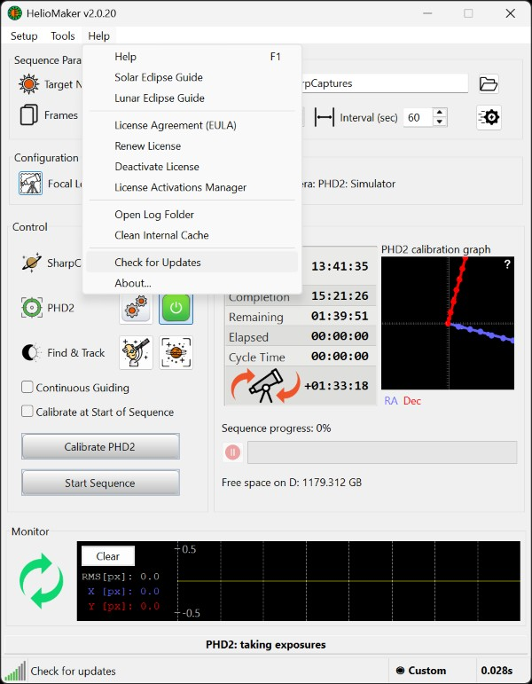
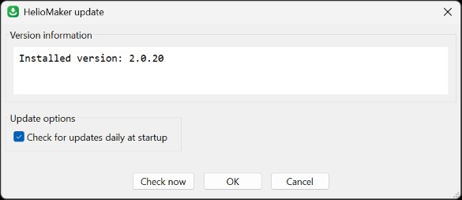

HelioMaker can automatically check for new releases, download, and install them without leaving the application. You can trigger a manual check at any time via Help → Check for Updates.
Note: the update dialog described here comes with HelioMaker 2.0.20 and installs the updates that follow it. An earlier version updates to 2.0.20 with its own dialog: click Download, then Install.
From the main menu select Help → Check for Updates. This opens the Update dialog:

Click the Check now button. HelioMaker will:
If the daily check has already found a new version, the dialog opens with its changelog and the Download and Install button.
Click Download and Install. HelioMaker downloads the installer package and shows its progress (Downloading HelioMaker, the version and the percentage done). Closing the dialog during the download cancels it. When the download is complete and verified, the dialog closes and HelioMaker asks to install the update.

HelioMaker asks: "New HelioMaker version ... is available for install. The application will be closed and the update will be installed. Do you want to continue?" When you click Install, HelioMaker will:
An update restarts HelioMaker, so it cannot be installed while a sequence, an eclipse run or a scan is in progress. Finish or stop the run, then check again.
You can enable or disable daily checks at startup by toggling the Check for updates daily at startup option.